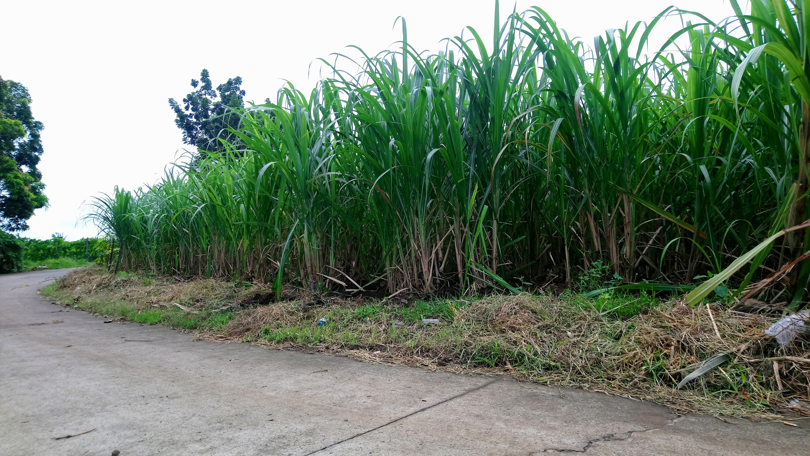

現在の所属
- アジア経済研究所(IDE-JETRO) 地域研究センター 南アジア研究グループ 研究員
過去の所属
- 三菱UFJリサーチ＆コンサルティング株式会社 政策研究事業本部 持続可能社会部 研究員（2022年）
- 国立台湾大学 農業経済学研究所 2022年修士課程修了
- 京都大学 農学部 食料・環境経済学科 2020年卒業
主な研究

気候変動適応 (Climate Change Adaptation)
気候変動の影響は年々高まり、2000年の頃から2100年には平均気温は最大4.8℃上昇し、洪水・干ばつ・台風など様々な自然災害の発生可能性も上がります。農業は特に天候に左右される産業であり、迫りくる気候リスクに如何に適応するかが私たちの食料安全保障の実現に肝要です。
そこで、農村部でどのような気候変動適応行動がとられ、その適応行動がどれほど効果的なものであるか、そして政策に応用するためにはどうすればよいか明らかにするために計量経済学・因果推論の手法を用いて研究しています。
参考資料：2100年 未来の天気予報（環境省）
Matsuura, Luh, Saiful Islam, (2023) Weather Shocks, Livelihood Diversification, and Household Food Security: Empirical Evidence from Rural Bangladesh. Conditinally accpeted by Agricultural Economics
Does Adaptation to Climate Change Benefit Agricultural Production? The Case of Vietnamese Rice Farmers (with W Kodama and VO Pede)、進行中
連絡先
Masanori_Matsuura[at]ide.go.jp
matsuura.masanori.r53[at]kyoto-u.jp
r09627028[at]ntu.edu.tw
地域研究センター 南アジア研究グループ 研究員